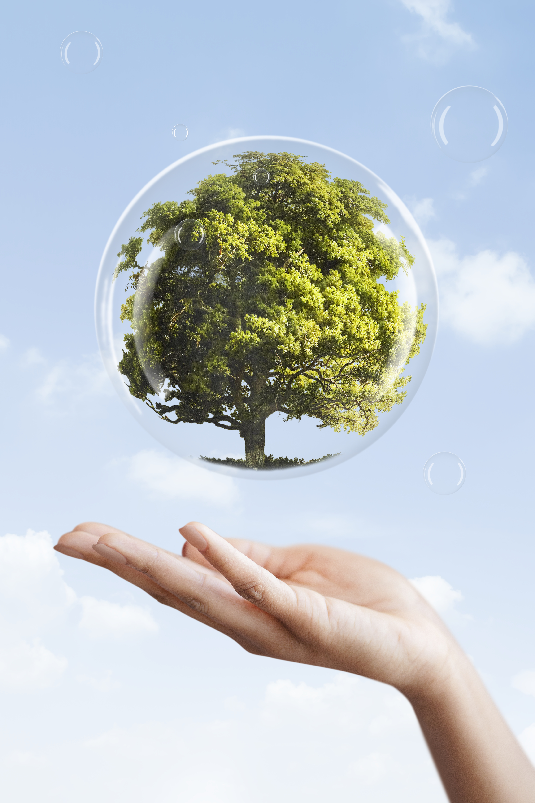

At Slate Milk, we believe that a stronger planet creates stronger people. That’s why we are committed to sustainability at every stage of our process, from sourcing ingredients to packaging our high-protein, low-sugar, lactose-free drinks. Our goal isn’t just to create delicious, nutritious beverages—it’s to do so in a way that minimizes environmental impact and contributes to a healthier world.

Sustainable Sourcing: From Ingredients to Packaging
- 100% Recyclable Packaging: Every can of Slate Protein Milk is packaged in 100% recyclable aluminum cans, making it easy for our customers to enjoy our nutrition drink cans without adding to plastic waste. Unlike plastic bottles, aluminum cans can be recycled indefinitely without losing quality.
- Eco-Friendly Production Practices: We work with partners who share our commitment to sustainability, implementing energy-efficient production methods that reduce our carbon footprint.
- Minimal Waste Policy: From the manufacturing process to delivery, we continually look for ways to reduce waste and improve efficiency.
By choosing Slate Protein Milk, you’re not just fueling your body with drinks with protein, but also making an environmentally responsible choice that benefits the planet.
Going Plastic Neutral with rePurpose Global
What Does Plastic Neutral Mean?
Being Plastic Neutral means that for every pound of plastic used in our packaging, we fund the removal of an equal amount of plastic waste from the environment. This ensures that we are actively working toward reducing the world’s plastic pollution rather than contributing to it.
- Preventing plastic waste from ending up in landfills and oceans
- Supporting waste management initiatives and ethical recycling programs
- Encouraging other brands to take responsibility for their environmental impact
This initiative aligns with our core mission: creating products that support both personal health and environmental well-being.
Our Goal: A Greener Future Aligned with the UN’s Sustainability Efforts
- Goal 2: Zero Hunger – Supporting better food production and nutrition choices.
- Goal 3: Good Health and Well-being – Providing healthy, high-protein, low-sugar drinks that promote wellness.
- Goal 15: Life on Land – Reducing our environmental impact through sustainable practices.
By aligning with these global initiatives, we are pushing ourselves to do better every day, ensuring that we’re not just making a great product, but also contributing to a healthier planet for future generations.
Why Sustainability Matters in High-Protein Drinks & Shakes
- Traditional dairy production can have a significant environmental impact. By using ultrafiltration, we reduce waste and improve the efficiency of milk production.
- Many protein shakes come in plastic bottles, which contribute to global plastic waste. Our choice to use aluminum ensures that every can of Slate Protein Milk is part of the solution, not the problem.
Where to Buy Protein Milk That’s Good for You and the Planet
If you’re wondering where to buy protein milk that aligns with your values, look no further than Slate Milk. Our products are available both online and in stores, so you can easily get your hands on a nutrition drink can that supports your health and sustainability goals.
Why Choose Slate Over Other Brands?
- ✅ Best Protein Milk for muscle recovery and daily nutrition
- ✅ 100% Recyclable Aluminum Cans
- ✅ Plastic Neutral Commitment
- ✅ No Added Sugar & Keto-Friendly
- ✅ Perfect for Post-Workout Recovery
Best Protein Shakes to Drink After a Workout
- Faster Muscle Recovery: Protein is essential after exercise to repair and build muscle fibers.
- Low Sugar for Sustained Energy: Many post-workout drinks are loaded with sugar, leading to energy crashes. Slate Milk has 0g added sugar, so you get the energy you need without the crash.
- Lactose-Free for Better Digestion: Many people experience bloating or discomfort after drinking regular milk-based protein shakes. Slate Milk is 100% lactose-free, making it easy on your stomach.
- Delicious & Convenient: With a rich, creamy taste and ready-to-drink convenience, it’s easy to fuel up wherever you are.
Join the Movement for a Healthier You & a Stronger Planet
- ✅ Packed with Protein
- ✅ Lactose-Free & Easy to Digest
- ✅ 0g Added Sugar & Keto-Friendly
- ✅ Recyclable Packaging & Plastic Neutral Commitment

If you’re looking for the best protein milk that fits your post-workout, daily nutrition, or keto-friendly lifestyle, Slate Milk is the answer.
Find Slate Milk in stores near you or order online today. Join us in making the world a stronger, healthier place—one can at a time!